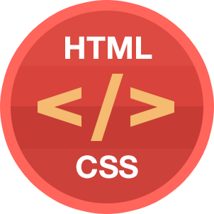

Урок 6. CSS3 Современное использование шрифтов. Работа с текстом.

HTML5 CSS
Работа с шрифтами. Веб-шрифты GOOGLE. Размещение текста в несколько колонок. Рассмотрим механизмы представления текстовой информации: оформление, выравнивание, отступы и т.д.
Используем в нашем проекте новые возможности работы с шрифтами, текстом. Используем шрифты GOOGLE. Преобразуем текстовую информацию нашего проекта в соответствии с новыми возможностями.
Введение
Ранее приходилось работать с ограниченным набором шрифтов, пригодных для веб-страниц. В данном случае речь идет о шрифтах, о которых заведомо известно, что они работают на разных браузерах и в разных операционных системах. Данная ситуация не подходит для современных веб-страниц, где шрифты играют огромную роль в создании общего впечатления о документе.
В CSS3 поддержка сложных шрифтов обеспечивается посредством возможности @font-face, которая применяется следующим образом:
Требуемый шрифт (или, более вероятно, несколько версий шрифта для поддержки разных браузеров) загружается на сайт.
Каждый шрифт регистрируется в таблице стилей с помощью команды @font-face.
Зарегистрированный шрифт используется в правилах стиля указанием его названия, точно так же, как и обычные веб-шрифты.
Когда браузер обнаруживает таблицу стилей, в которой используется специальный веб-шрифт, он загружает этот шрифт с сервера в свой кэш для временного хранения страниц и изображений. После этого браузер использует этот шрифт только для данной страницы или сайта. Если этот же шрифт указывается в другой странице, он должен быть зарегистрирован на этой странице и загружен на ее сервер, откуда он может быть загружен браузером в свой кэш.
Форматы веб-шрифтов
Хотя все современные браузеры поддерживают возможность @font-face, не все они поддерживают одинаковые типы файлов шрифтов. Например, Internet Explorer, который обеспечивает использование @font-face в течение многих лет, поддерживает только файлы типа EOT (Embedded OpenType). Этот формат предоставляет ряд преимуществ, например, в нем используется сжатие для уменьшения объема файла шрифтов, а также применяется строгое лицензирование для веб-сайтов, чтобы шрифт нельзя было украсть с одного сайта и использовать на другом.
Но формат EOT никогда ни пользовался большой популярностью и не используется никакими другими браузерами. Вместо него браузеры работают с более знакомыми стандартами шрифтов, применяемыми в компьютерных приложениях — TTF (TrueType) и OTF (OpenType PostScript). Кроме этого, существуют еще два типа отображения шрифтов — SVG и WOFF. В таблице ниже дано краткое описание всех этих форматов шрифтов:
Firefox (до версии 3.6), Chrome (до версии 6), Safari и Opera
EOT (Embedded OpenType)
Формат, специфичный для продуктов корпорации Microsoft. Не завоевал популярности у браузеров, за исключением Internet Explorer
Internet Explorer (до версии IE 9)
SVG (Scalable Vector Graphics)
Универсальный графический формат, который можно использовать для создания шрифтов. Дает хорошие, но не отличные результаты — медленно отображается и демонстрирует текст пониженного качества
Safari Mobile (на iPhone и iPad до iOS 4.2) и мобильные устройства под управлением операционной системы Android
WOFF (Web Open Font Format)
Возможно, единый формат шрифтов будущего. Поддерживается новыми версиями браузеров
Любой поддерживающий браузер, начиная с Internet Explorer 9, Firefox 3.6 и Chrome 6
В итоге можно сказать следующее: если вы хотите использовать возможность @font-face и поддерживать широкий диапазон браузеров, вам нужно предоставлять ваш шрифт в нескольких разных форматах. Как минимум, шрифт нужно предоставить в формате TTF или OTF (без разницы), EOT и SVG. Хорошо (но не обязательно) также предоставить шрифт в перспективном формате WOFF, может стать более популярным и лучше поддерживаемым в будущем. (Одним из достоинств этого формата является использование сжатых файлов, что сокращает время их загрузки.)
Даже если вы последуете всем приведенным ранее правилам и предоставите все требуемые форматы шрифтов, ожидайте некоторые загвоздки. В частности, с веб-шрифтами иногда возникают следующие проблемы:
Многие шрифты выглядят плохо в операционной системе Windows XP, т.к. в настройках многих компьютеров с этой операционной системой отключено сглаживание (anti-aliasing). (А без применения сглаживания шрифты выглядят очень непривлекательно.)
От пользователей поступали жалобы о проблемах с печатью определенных внедренных шрифтов из некоторых браузеров или в операционных системах.
Некоторые браузеры страдают проблемой FOUT (Flash of Unstyled Text, вспышка нестилизованного текста). Это явление происходит, когда внедренный шрифт не успевает загрузиться вовремя, и страница отображается сначала в резервном шрифте, а потом воспроизводится повторно на встроенном шрифте. Эта проблема особенно заметна в старых версиях браузера Firefox. Если вас это сильно беспокоит, можете воспользоваться библиотекой JavaScript от Google, позволяющей разработчику определить резервные стили, которые используются вместо незагруженных внедренных шрифтов, таким образом, предоставляя ему полный контроль над воспроизведением текста в любое время.
Хотя эти небольшие проблемы иногда и возникают, большинство из них постепенно решается с выпуском новых версий браузеров. Например, браузер Firefox теперь сводит эффект FOUT к минимуму, ожидая до трех секунд, пока не загрузится внедренный шрифт, прежде чем использовать резервный шрифт.
Наборы шрифтов
На рисунке ниже показано несколько шрифтов из предоставляемых на сайте Font Squirrel: www.fontsquirrel.com
Рисунок 1 – пример выбора шрифтов с сайта Font Squirrel
Сайт Font Squirrel предоставляет для загрузки несколько сот шрифтов, организованных в разделы по категориям (такие как, например, Calligraphic, Grunge или Retro). Все эти шрифты бесплатные для любого использования, будь то на персональном компьютере для создания документов или на веб-странице в Интернете.
Набор шрифтов загрузится в виде файла, сжатого в формате ZIP, который содержит несколько файлов шрифта в разных форматах. Чтобы использовать шрифт в своей веб-странице, файлы разных форматов шрифта нужно загрузить на веб-сервер в папку этой веб-страницы. После этого шрифт нужно зарегистрировать, чтобы он был доступным для использования в таблице стилей. Регистрация выполняется с помощью правила @font-face в начале таблицы стилей, которое выглядит следующим образом:
Строки приведенного кода выполняют следующие функции:
Выражение @font-face регистрирует шрифт для его дальнейшего применения в таблице стилей.
Шрифту можно присвоить любое название. Это название будет употреблено позже, при использовании шрифта.
Первым должен быть указан формат EOT, т.к. дальнейшая часть правила сбивает с толку Internet Explorer, и тот не обращает внимания на остальные форматы. Функция таблицы стилей url() указывает браузеру загрузить файл из обозначенного URL. Если шрифт размещен в одной папке с веб-страницей, то здесь можно просто указать название файла.
Функция local() указывает браузеру название шрифта, и если этот шрифт установлен на компьютере посетителя веб-страницы, браузер использует локальный шрифт. Но в редких случаях это может вызвать проблемы. Например, в зависимости от того, где установлен шрифт на компьютере посетителя, компьютеры Mac OS X могут вывести предупреждение о нарушении безопасности, или же может загрузиться другой шрифт с таким же названием, как и ваш. По этой причине веб-разработчики иногда указывают явно несуществующее имя файла, чтобы браузер не нашел локального шрифта. В качестве простого имени такого типа можно использовать какой-либо бессмысленный символ.
Последний шаг — это сообщить браузеру о других файлах шрифтов, которые он может использовать. Если имеется файл шрифта типа WOFF, укажите этот файл первым, т.к. данный формат предоставляет наилучшее качество шрифта. Следующим укажите файл шрифта формата TTF или OTF, а самым последним — файл формата SVG.
Пример шрифта Amerika. Съешь еще немного этих мягких французких булочек
Пример шрифта Capture-it. Съешь еще немного этих мягких французких булочек
Веб-шрифты Google
Еще один источник бесплатных веб-шрифтов —- это служба Google Web Fonts. Ее особенность в том, что пользователю не нужно беспокоиться о форматах шрифтов, т.к. Google определяет браузер посетителя страницы и автоматически отправляет файл шрифта нужного формата.
Чтобы использовать шрифт Google в своих страницах, выполните такую последовательность шагов:
Откройте в браузере страницу Google Web Fonts (https://fonts.google.com/). Откроется страница, содержащая длинный список имеющихся в наличии шрифтов.
Настройте опции поиска. Если вы знаете название требуемого вам шрифта, введите его в поле поиска. В противном случае нужно будет просматривать все шрифты, прокручивая страницу вверх, что для латинских шрифтов может занять значительное время. Чтобы ускорить поиск, можно отсортировать и отфильтровать список согласно определенным критериям.
Обнаружив подходящий шрифт, щелкните по знаку «+». Откроется новое окно, содержащее описание шрифта и все его подробности.
Если на этом этапе вы решите использовать данный шрифт, то вы можете скачать данный шрифт себе и использовать его так, как показано в предыдущем примере или использовать код из ссылки на таблицу стилей, которую нужно вставить в разметку вашей веб-страницы, и примера правила таблицы стилей, применяющего шрифт.
Вставьте в свою веб-страницу ссылку на таблицу стилей. Например:
Данная таблица стилей регистрирует шрифт посредством функции @font-face, избавляя вас от необходимости выполнять эту работу самому. Но что лучше всего, Google предоставляет файлы шрифтов, что, опять же, избавляет вас от необходимости загружать их на свой веб-сайт.
Используйте шрифт, обращаясь к нему по его названию, в любое время. Например, далее приводится правило для применения должным образом зарегистрированного шрифта Ceviche One в заголовках первого уровня, предоставляющее резервный шрифт на случай, если браузер не сможет загрузить основной шрифт:
h1 {
font-family: 'Underdog', arial, serif;
}
Poiret One. Используется таблица стилей GOOGLE. Съешь еще немного этих мягких французких булочек
Poiret One. Используется внутреннея таблица стилей и шрифт хранится на вашем сервере. Съешь еще немного этих мягких французких булочек
Underdog. Используется таблица стилей GOOGLE. Съешь еще немного этих мягких французких булочек
Размещение текста в несколько колонок
В CSS3 был добавлен абсолютно новый модуль для размещения текста в несколько колонок, таким образом предоставляя разработчикам гибкое средство для решения проблемы длинного текста без потерь его читаемости. Создание нескольких колонок текста не требует почти никаких усилий и может быть выполнено двумя способами. Первый подход — это установить количество требуемых колонок с помощью свойства column-count, как показано в следующем коде:
.Content {
text-align:justify;
column-count:3;
}
Для браузеров Firefox, Chrome и Safari это свойство используется с префиксом разработчика браузера:
.Content {
text-align:justify;
-moz-column-count: 3;
-webkit-column-count: 3;
column-count:3;
}
Указание точного числа колонок лучше всего подходит для веб-страниц с компоновкой фиксированного размера. Но если размеры компоновки меняются в соответствии с размерами окна браузера, ширина колонок может оказаться слишком большой и текст в них будет трудно читать. Во избежание такой проблемы лучше не устанавливать точное число колонок, а дать указание браузеру, каким должен быть размер каждой колонки, используя свойство column-width, как показано далее:
.Content {
text-align:justify;
-moz-column-width: 10em;
-webkit-column-width: 10em;
column-width: 10em;
}
Размещение текста в несколько колонок
В CSS3 был добавлен абсолютно новый модуль для размещения текста в несколько колонок, таким образом предоставляя разработчикам гибкое средство для решения проблемы длинного текста без потерь его читаемости. Создание нескольких колонок текста не требует почти никаких усилий и может быть выполнено двумя способами. Первый подход — это установить количество требуемых колонок с помощью свойства column-count, как показано в следующем коде:
.Content {
text-align:justify;
column-count:3;
}
Для браузеров Firefox, Chrome и Safari это свойство используется с префиксом разработчика браузера:
.Content {
text-align:justify;
-moz-column-count: 3;
-webkit-column-count: 3;
column-count:3;
}
Указание точного числа колонок лучше всего подходит для веб-страниц с компоновкой фиксированного размера. Но если размеры компоновки меняются в соответствии с размерами окна браузера, ширина колонок может оказаться слишком большой и текст в них будет трудно читать. Во избежание такой проблемы лучше не устанавливать точное число колонок, а дать указание браузеру, каким должен быть размер каждой колонки, используя свойство column-width, как показано далее:
.Content {
text-align:justify;
-moz-column-width: 10em;
-webkit-column-width: 10em;
column-width: 10em;
}
Таким образом, браузер может создать такое количество колонок, которое необходимо для заполнения имеющегося пространства.
С помощью CSS3 свойство column-gap Вы можете установить величину отступа между столбцами текста.
div {
column-count:4;
column-gap:50px;
}
Размещение текста в несколько колонок
В CSS3 был добавлен абсолютно новый модуль для размещения текста в несколько колонок, таким образом предоставляя разработчикам гибкое средство для решения проблемы длинного текста без потерь его читаемости. Создание нескольких колонок текста не требует почти никаких усилий и может быть выполнено двумя способами. Первый подход — это установить количество требуемых колонок с помощью свойства column-count, как показано в следующем коде:
.Content {
text-align:justify;
column-count:3;
}
Для браузеров Firefox, Chrome и Safari это свойство используется с префиксом разработчика браузера:
С помощью свойства column-rule Вы можете задать ширину, цвет и стиль оформления пространства между столбцами.
div {
column-count:4;
column-rule:2px dotted #7F0055;
}
Размещение текста в несколько колонок
В CSS3 был добавлен абсолютно новый модуль для размещения текста в несколько колонок, таким образом предоставляя разработчикам гибкое средство для решения проблемы длинного текста без потерь его читаемости. Создание нескольких колонок текста не требует почти никаких усилий и может быть выполнено двумя способами. Первый подход — это установить количество требуемых колонок с помощью свойства column-count, как показано в следующем коде:
.Content {
text-align:justify;
column-count:3;
}
Для браузеров Firefox, Chrome и Safari это свойство используется с префиксом разработчика браузера:
С помощью нового CSS3 свойства text-shadow Вы можете добавлять к тексту элементов тени (к тексту одного элемента может быть добавлено одновременно несколько теней).
При задании тени для текста необходимо указать: величину смещения тени от текста по горизонтали и вертикали (может быть отрицательной), а также радиус размытия и цвет тени.
#shadow1 {
text-shadow:3px 2px #FFAE00;
}
#shadow2 {
text-shadow:1px 1px 10px #FFAE00;
}
#shadow3 {
text-shadow:2px 2px 2px #FFAE00, 2px 2px 15px #1435AD;
}
Свойство text-overflow
В CSS3 было добавлено новое свойство text-overflow, которое позволяет указать, что должно случиться с текстом вышедшем за пределы границ элемента.
С помощью нового CSS3 свойства word-wrap Вы можете указать, что длинные слова выходящие за пределы границ элемента должны разделяться и переносится на новую строку.
#wrap2 {
word-wrap:break-word;
}
Пример использования тени на шрифте Amerika.
Используется размытие тени на шрифте Poiret One.
Используется оба вида тени на шрифте Underdog.
Технология рисования canvas
HTML 5 Canvas (канва HTML 5) предоставляет способ вывода графики и рисования с использованием JavaScript. Для каждого элемента canvas можно использовать контекст, в котором нужно вызвать команды JavaScript для рисования на Canvas. Браузеры могут реализовывать несколько контекстов элемента canvas и предоставлять различные API для рисования. Следует также помнить, что рисование происходит в растровой форме
На данном уроке вы узнаете, как использовать контекст элемента canvas, основные функции для работы с canvas, включая линии, примитивы фигур, изображения, текст и другие возможности. Предполагается, что вы владете основами JavaScript.
Основы использования Canvas
Чтобы создать Canvas-контекст, достаточно просто добавить элемент <canvas> в HTML-документ:
<canvas id="myCanvas" width="300" height="150">
Альтернативное содержимое, которое будет показано, если браузер не поддерживает Canvas.
В данном случае можно написать сообщение «Ваш браузер не поддерживает CANVAS»
</canvas>
Нужно добавить идентификатор к элементу canvas, чтобы потом обратиться к нему в JavaScript, также необходимо задать атрибуты width и height для определения ширины и высоты элемента canvas. По умолчанию размер холста 150х300 пикселей.
Для рисования внутри элемента canvas, нужно использовать JavaScript. Сначала нужно найти созданный тег canvas с помощью функции getElementById, а потом инициализировать нужный контекст. Как только это будет сделано, можно начинать рисование на канве, используя доступные API-команды выбранного контекста. Следующий скрипт рисует простой прямоугольник на канве (просмотреть пример использования Canvas):
<script>
// Получить ссылку на элемент canvas по идентификатору.
var elem = document.getElementById('myCanvas');
// Проверка свойства и метода на доступность для обратной совместимости со старыми браузерами
if (elem && elem.getContext) {
// Получить 2D контекст.
// Для каждого элемента можно инициализировать только один контекст
var context = elem.getContext('2d');
if (context) {
// Рисуем прямоугольник, задав координаты (x,y), а также его ширину и высоту.
context.fillRect(0, 0, 150, 100);
}
}
</script>
Canvas 2D API
Заливки и границы фигур
С помощью свойств fillStyle и strokeStyle настраиваются цвета, используемые для заливки и линий объектов. Значения цветов, используемые в этих методах, такие же как и в CSS: шестнадцатеричные коды (#F5E6AB), rgb(), rgba() или даже hsla(), если браузер поддерживает такой способ задания цвета.
Используя метод fillRect, рисуется прямоугольник с заливкой. С помощью метода strokeRect рисуется прямоугольник только с границами, без заливки. Для очистки части канвы, используется метод clearRect. Три этих метода используют одинаковый набор аргументов: x, y, width, height. Первые два аргумента задают координаты (x,y), а следующие два — ширину и высоту прямоугольника.
Для изменения толщины линий можно использовать свойство lineWidth.
Окружность и круг
<canvas id="myCanvas2" width="300" height="150">
<p> </p>
<p>Альтернативное содержимое, которое будет показано, если браузер не поддерживает Canvas.
В данном случае можно написать сообщение «Ваш браузер не поддерживает CANVAS» </p>
</canvas>
<script>
// Получить ссылку на элемент canvas по идентификатору.
var elem = document.getElementById('myCanvas2');
// Проверка свойства и метода на доступность для обратной совместимости со старыми браузерами
if (elem && elem.getContext) {
// Получить 2D контекст.
// Для каждого элемента можно инициализировать только один контекст
var context = elem.getContext('2d');
if (context) {
context.beginPath();
context.arc(75, 75, 40, 0, Math.PI*2, true);
context.closePath();
context.fillStyle = "#FFA500";
context.fill(); // Если нужен круг, можно залить окружность
}
}
</script>
Кривые Безье
Для создания кривых Безье в HTML5 Canvas используется метод bezierCurveTo(). Кривые Безье задаются с помощью начальной точки, двух контрольных точек и конечной точки. В отличие от квадратичных кривых, кривые Безье в HTML 5 Canvas определяются двумя контрольными точками вместо одной, позволяя создавать кривые с более сложным очертанием.
<canvas id="myCanvas3" width="500" height="250">
<p> </p>
<p>Альтернативное содержимое, которое будет показано, если браузер не поддерживает Canvas.
В данном случае можно написать сообщение «Ваш браузер не поддерживает CANVAS» </p>
</canvas>
<script>
var canvas = document.getElementById("myCanvas3");
var context = canvas.getContext("2d");
context.moveTo(200, 50);
var controlX1 = 100;
var controlY1 = 100;
var controlX2 = 480;
var controlY2 = 150;
var endX = 300;
var endY = 170;
context.bezierCurveTo(controlX1, controlY1, controlX2,
controlY2, endX, endY);
context.lineWidth = 10;
context.strokeStyle = "black"; // line color
context.stroke();
</script>
Контуры
Контуры Canvas позволяют рисовать фигуры любой формы. Сначала нужно нарисовать "каркас", а потом можно использовать стили линий или заливки, если это необходимо. Чтобы начать рисование контура, используется метод beginPath(), потом рисуется контур, который можно составить из линий, кривых и других примитивов. Как только рисование фигуры окончено, можно вызвать методы назначения стиля линий и заливки, и только потом вызвать функцию closePath() для завершения рисования фигуры.
<canvas id="myCanvas4" width="500" height="250">
<p> </p>
<p>Альтернативное содержимое, которое будет показано, если браузер не поддерживает Canvas.
В данном случае можно написать сообщение «Ваш браузер не поддерживает CANVAS» </p>
</canvas>
<script>
var canvas = document.getElementById("myCanvas4");
var context = canvas.getContext("2d");
// Задаем свойства заливки и линий.
context.fillStyle = '#00f';
context.strokeStyle = '#f00';
context.lineWidth = 4;
context.beginPath();
// Начинаем рисовать треугольник с верхней левой точки.
context.moveTo(10, 10); // перемещаемся к координатам (x,y)
context.lineTo(100, 10);
context.lineTo(100, 10);
context.lineTo(350, 150);
context.bezierCurveTo(50, 150, 40, 80, 100, 10);
// Заполняем фигуру заливкой и применяем линии
// Фигура не будет отображена, пока не будет вызван хотя бы один из этих методов.
context.fill();
context.stroke();
context.closePath();
</script>
Вставка изображений в Canvas
Метод drawImage позволяет вставлять другие изображения (img и canvas) на канву. В некоторых браузерах существует возможность рисования SVG-изображений внутри элемента canvas. drawImage метод, который может принимать три, пять или девять аргументов:
Три аргумента: Базовое использование метода drawImage включает один аргумент для указания изображения, которое необходимо вывести на канве, и два аргумента для задания координат.
Пять аргументов: Используются предыдущие три аргумента и еще два, задающие ширину и высоту вставляемого изображения (в случае если вы хотите изменить размеры изображения при вставке).
Девять аргументов: Используются предыдущие пять аргументов и еще четыре: два для координат области внутри исходного изображения и два для ширины и высоты области внутри исходного изображения для обрезки изображения перед вставкой в Canvas.
Пример вставки изображения:
<canvas id="myCanvas5" width="600" height="600">
<p> </p>
<p>Альтернативное содержимое, которое будет показано, если браузер не поддерживает Canvas.
В данном случае можно написать сообщение «Ваш браузер не поддерживает CANVAS» </p>
</canvas>
<script>
var canvas = document.getElementById("myCanvas5");
var context = canvas.getContext("2d");
// Создаем объект изображения
var img = new Image();
// Привязываем функцию к событию onload
// Это указывает браузеру, что делать, когда изображение загружено
img.onload = function() {
// Три аргумента: элемент img или canvas, координаты для вывода на канву (x,y).
context.drawImage(img, 10, 10);
// Пять аргументов: элемент img или canvas, координаты для вывода на канву (x,y),
// ширина и высота для изменения размеров перед выводом
context.drawImage(img, 10, 315, 500, 100);
// Девять аргументов: элемент img или canvas, координаты, ширина и высота для обрезки изображения,
// координаты для вывода на канву (x,y), ширина и высота для изменения размеров перед выводом.
context.drawImage(img, 120, 120, 100, 100, 10, 420, 150, 100);
};
// Загружаем файл изображения
img.src = "image/5.png";
</script>